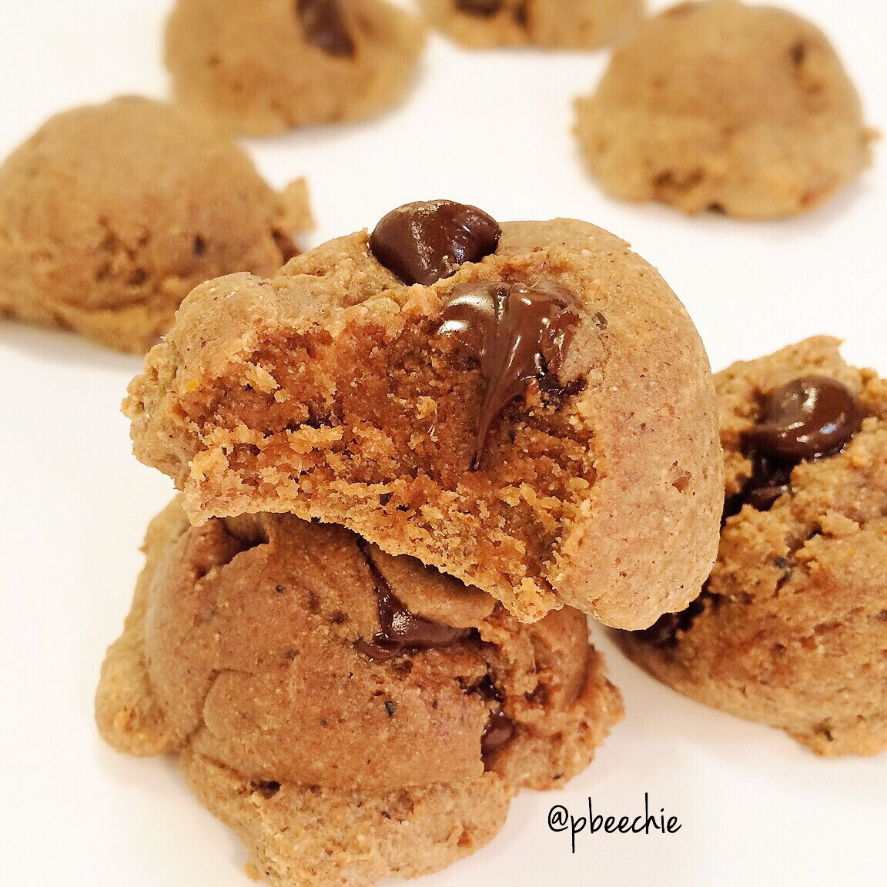

The Best Mocha Chip Protein Cookies

So for the longest time, I never really cared for cookies. I'm all about cakes and cupcakes. I didn't really try making healthy cookies until 6-7 months ago. I haven't made too many, but I'm officially a cookie lover now. My friend Nicolette has convinced to me join her in the cookie monster gang. For many reasons. 1 - They're usually few ingredients and easy to mix aka no blending aka easy cleanup 2 - They bake within 8-15 minutes. Instant. Gratification. I'm about that life. 3 - There's so many textures to choose from!! Do I want gooey cookies today? Do I want to make crispy cookies today? Do I want big cookies? Mini macaroon-type cookies? CHOICES!
The ONLY downside of cookies is stopping yourself from eating them all O_O Seriously, who decided to make them so bite-sized and poppable? Oh right, I did. I made them deliciously poppable. Good job Kim. Oh thanks Kim. You're welcome Kim.
My cookies are definitely improving with time. These are absolutely the best cookies I've made, hence the name. Melty chocolate really makes or breaks a cookie (not literally, but you know...). I can always tell when a recipe is REALLY good vs just good because I single-handedly eat 90% of the outcome rather than eating 1-2 servings and letting others finish off the rest. That's what happened with these cookies. I know I promised you cookies, butttt. Whoops? *bats eyelashes* Sorry bout it. Next time I'll share. Maybe probably not.
The Best Mocha Chip Protein Cookies
Makes: 8 cookies
-
60 g chocolate chip protein pancake mix
-
1/4 cup espresso almond butter*
-
1 egg white
-
2 TBSP water
-
2 TBSP stevia
-
1/2 tsp unsweetened cocoa powder
-
Preheat the oven to 350 F. Mix all of your ingredients in a medium sized bowl. See notes below for substitution options! Mix thoroughly, as the cookie dough should be thick in consistency.
-
Once even and no lumps of dryness remain, spray a baking sheet with nonstick spray. Form 8 cookie dough balls, placing them on the baking sheet and lightly flattening. I like to use a heaping tablespoon to scoop the dough out. Once you have 8 cookies, bake at 350 F for 7-9 minutes; they will bake fast so be sure not to overbake them to where they are dry!
-
Let cool for 3-5 mins and enjoy gooey gooey chocolatey goodness.
Nutrition Info for 1 cookie: 79 cals; 4.5 g fat, 4.2 g carbs (1.7 g fiber), and 6 g protein
*If you don't have this almond butter, it's okay! You can use regular almond butter and add 1/2 tsp instant espresso powder as well. It will substitute fine.